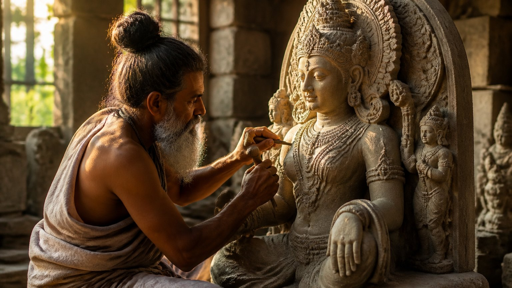
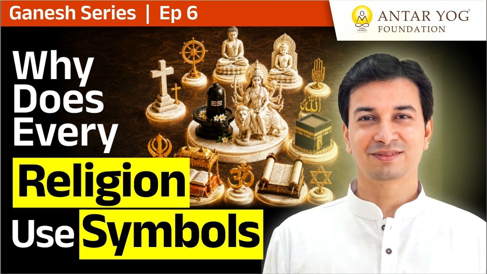

क्या कोई सचमुच बिना आकार के पूजा कर सकता है?
हम अक्सर सुनते हैं कि कुछ धर्मों में मूर्ति पूजा नहीं होती। विदेशों में, दूसरी परंपराओं में, मूर्ति को नहीं माना जाता। पर गुरुदेव एक सीधा सा प्रश्न रखते हैं: क्या सचमुच किसी का काम बिना आकार के चल सकता है?
उनका उत्तर स्पष्ट है। जब तक हम साकार हैं, यानी स-आकार (with form), तब तक हमें सामने भी कोई आकार चाहिए। हमारे पास एक शरीर है, एक आकार है। इसलिए आरंभ में उपासना के लिए कुछ न कुछ साकार चाहिए ही।
आगे चलकर, समाधि अवस्था में, निराकार के साथ जो करना है वह कर सकते हैं। लेकिन अभी, इस क्षण, कुछ साकार चाहिए।
क्रॉस, चांद-तारे और परिक्रमा
ध्यान से देखें तो हर परंपरा किसी प्रतीक का सहारा लेती है। किसी को क्रॉस चाहिए। किसी को चांद और तारे। कहीं चादर चढ़ाई जाती है, तो उसके लिए भी कोई ढांचा चाहिए। मक्का-मदीना में लोग परिक्रमा करते हैं, और परिक्रमा किसी न किसी के चारों ओर ही होती है। आचार्य जी कहते हैं कि कोई माने या न माने, बिना साकार के किसी का भी काम नहीं हो सकता।
अंतर केवल इतना है कि हमारी परंपरा ने उसे कलात्मक आकार दिया। दूसरी जगह वृत्त जैसे सादे आकार हैं, हमारे यहां कलात्मक मूर्तियां हैं। मान्यता क्या है, यह मुख्य बात नहीं। प्रतीक होगा, और उस प्रतीक के पीछे कुछ तो होगा।
आचार्य जी समझाते हैं कि साकार नितांत आवश्यक है, क्योंकि हम स्वयं साकार हैं।
आप जिस भी प्रतीक के सामने सिर झुकाते हैं, क्या आपने कभी सोचा है कि उसके पीछे क्या है?
हम सांत हैं: एक सीमित अस्तित्व
अब अगला प्रश्न। यदि तुम साकार हो, तो तुम सीमित हो। इसे सांत कहते हैं, यानी स-अंत (finite), जिसका कहीं अंत है।
शरीर की कहीं न कहीं सीमा आती है। और जब हम सीमित हैं, तो हमारी इंद्रियां (sense organs) भी सीमित हैं: हाथ, पैर, कान, नाक।
अब समस्या यह है: हम सीमित हैं, पर पूजा करनी है अनंत (infinite) की। सांत, अनंत की पूजा सीधे नहीं कर सकता।
योग का अर्थ: जुड़ना
शास्त्र अंततः क्या कहते हैं? ईश्वर से एक हो जाओ। योग की स्थिति में जाओ। कर्मयोग करो, भक्तियोग करो, ज्ञानयोग करो, ध्यानयोग करो।
इन सबका लक्ष्य एक है: अंतर्योग की अवस्था, यानी अपने भीतर के ईश्वर तक पहुंचना। योग का अर्थ ही है जुड़ना। लेकिन सीमित, असीमित से सीधे नहीं जुड़ पाता।
असली पूजा तो निराकार की है
असली पूजा किसकी है? अनंत की, निराकार (formless) की। महागणपति, महादेव, देवों के देव महादेव, ओंकार की अंतिम साधना, वह निराकार ही है।
मृत्यु के समय हम कहते हैं, "पांचों तत्वों में विलीन हो गया।" यानी जहां जाना था, वहां, निराकार में चला गया। अंतिम साधना उसी की थी। पर समस्या यह है कि जब तक मैं जीवित हूं, वह मुझे सीधे दिखाई नहीं देता।
दो ही रास्ते हैं
इसलिए योग के लिए दो ही स्थितियां हैं।
पहला रास्ता: अनंत को सीमित रूप में लाना। तब एक सीमित दूसरे सीमित को देखकर उससे संवाद कर सकता है, और उसी के माध्यम से अनंत तक पहुंच सकता है। यही पहला चरण है, और यहीं से मूर्ति आती है।
दूसरा रास्ता: स्वयं अनंत बन जाना। पर क्या दो अनंत हो सकते हैं? यदि दो होते, तो पहला कहीं समाप्त होता और दूसरा वहां से शुरू होता। यानी दो अनंत हो ही नहीं सकते, इसलिए एक ही अनंत होगा।
यही समाधि अवस्था है, जहां परम तत्व से आत्म तत्व जागृत हो जाता है, अद्वैत (non-duality) की अवस्था। इसे ऋतम्भरा समाधि, कैवल्य पद या जीवनमुक्त अवस्था कहते हैं। इस अवस्था में आप स्वयं को सीमित शरीर नहीं, आत्म तत्व मानते हैं। आप शरीर से परे हो जाते हैं।
यदि आप उस अवस्था पर हैं, तो आपकी निराकार पूजा ठीक है, स्वीकार है। और यदि नहीं, तो आपको उसे साकार रूप में लाना ही होगा।
ईमानदारी से पूछिए: क्या आप अभी स्वयं को शरीर से परे अनुभव करते हैं?
हाथी, चूहा, क्रॉस और चांद: ये सब क्यों?
गुरुदेव स्पष्ट करते हैं कि यह उनका अपना कोई सिद्धांत नहीं है, बल्कि मूर्ति किस प्रकार आई, उसका वर्णन है।
यदि निराकार ही सब कुछ था, तो ये अलग-अलग मूर्तियां क्यों आईं? हाथी जैसे रूप क्यों बने? आसमान में चांद-तारे अच्छे-भले थे, उन्हें नीचे लाने की क्या जरूरत थी? लकड़ियां जोड़कर क्रॉस बनाने की क्या आवश्यकता थी? हमारे यहां वाहन, चूहा, अलग-अलग आकार, इन सबको भगवान से जुड़ने की क्या जरूरत पड़ी?
कुछ तो कारण होगा। और उसी कारण को समझना इस यात्रा का उद्देश्य है।
मूर्ति ऋषियों के दर्शन से आती है
मूर्ति किसकी पसंद से आती है? ऋषि-मुनियों की पसंद से। उन्होंने जिस परमात्मा के दर्शन किए थे, वही स्वरूप हमें चाहिए।
यानी मूर्ति मनमाना आकार नहीं, बल्कि ऋषियों के अनुभव का नक्शा है। आरंभ कहीं से भी हो, पर दिशा वहीं होनी चाहिए जिसका वर्णन उन्होंने किया।

मुख्य बातें
- जब तक हम साकार हैं, उपासना के लिए हमें कोई न कोई आकार चाहिए; हर परंपरा किसी प्रतीक का सहारा लेती है।
- हम सांत (सीमित) हैं, इसलिए अनंत की पूजा सीधे नहीं कर सकते।
- असली पूजा निराकार की है, पर जीवित रहते वह सीधे दिखाई नहीं देता।
- योग के दो ही रास्ते हैं: अनंत को साकार रूप में लाना, या स्वयं अनंत (समाधि, कैवल्य, जीवनमुक्त अवस्था) बन जाना।
- दो अनंत नहीं हो सकते, इसलिए अंतिम अवस्था अद्वैत है।
- मूर्तियां ऋषि-मुनियों के दर्शन से आई हैं; आरंभ कहीं से भी हो, पहुंचना उसी स्वरूप तक है।
